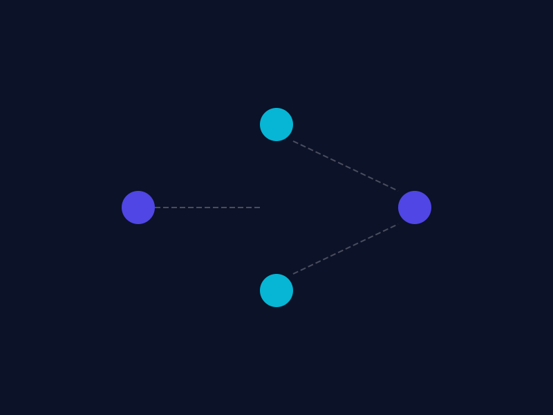

Application-Aware Routing
Prioritizes critical services — ensuring consistent performance and uninterrupted access for users and citizens when it matters most.
Software-Defined WAN
Connect offices, departments, data centers, and remote locations using MPLS, Internet, Broadband, and 4G/5G — dynamically selecting the best path for every application in real time to ensure service availability, bandwidth optimization, and secure connectivity.
Request SD-WAN Demo
Key Functions & Benefits
Centralized control, encrypted transport, and cost-effective scale — without sacrificing performance for critical services.
Prioritizes critical services — ensuring consistent performance and uninterrupted access for users and citizens when it matters most.
Complete network visibility, simplified administration, and faster troubleshooting across every branch and remote site.
Encrypted communication, secure access policies, and integration with advanced cybersecurity solutions across the WAN edge.
Reduce dependency on expensive MPLS circuits with zero-touch deployment, automatic failover, and software-defined agility.
Why SD-WAN now
Legacy WAN architectures struggle when applications live everywhere — data center, cloud, SaaS, and the edge. Apricus SD-WAN gives operators a single control plane to orchestrate paths, policies, and performance across every link type.
The result: resilient connectivity that scales with your organization — without multiplying management overhead.
Walk through application-aware routing, centralized management, and secure branch connectivity for your network.
Request SD-WAN Demo